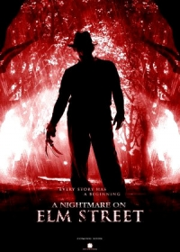
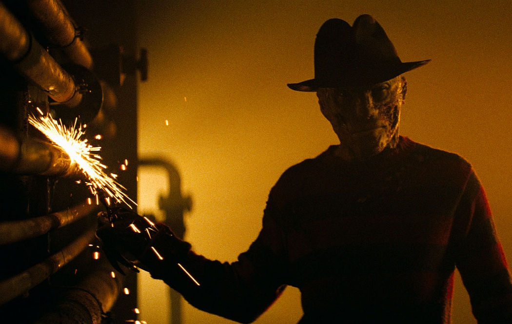
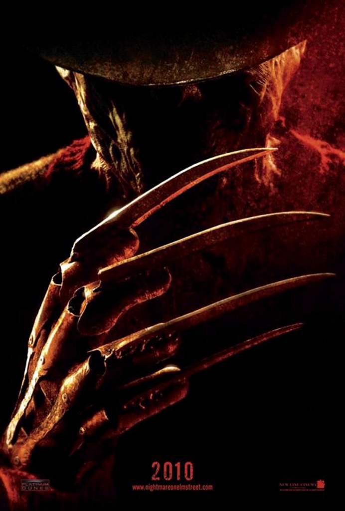
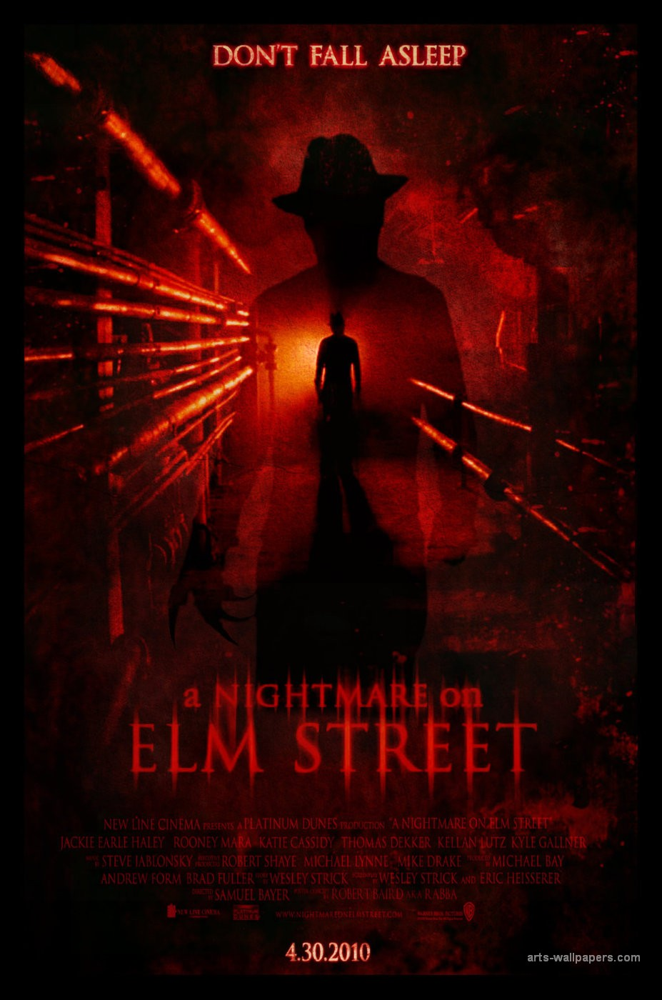

Michael Bay folytatja keresztes hadjáratát a gyermekkorunk ellen: rebootolta, ezzel egyidejűleg le is rombolta az utolsó mítoszunkat, Freddy Krueger hátborzongató történetét.
Wes Craven 1984-es, kultikus filmjének feldolgozását úgynevezett újragondolásként hirdették, ehelyett azonban ügyetlen kopipésztelést kaptunk, amelyből épp azok az apróságok hiányoznak, amelyek működőképessé tették az eredetit.
Bizonyos filmek egyszerűen idejétmúlttá válnak, és megérnek arra, hogy frissítsék őket a korszellemhez, a nézői elvárásokhoz. A Rémálom az Elm utcában magán viselte a nyolcvanas évek tinihorrorjainak inkább kínos nyomait, ráadásul a folytatások formájában 2003-ig tartó abúzus sem tett jót a patinásodásának. Robert Englund ikonikus karaktere önmaga paródiájába fordult, épp ideje volt, hogy valaki gatyába rázza.

Biztatóak is voltak a 2010-es remake első jelei. A főszerepre az egyetlen szóba jöhető színészt, Jackie Earle Haley-t választották (akinek még azt is megbocsátjuk, hogy megint Rorschach-hangon beszél). A maszkmesterek gondoskodtak arról, hogy kevésbé gumiszerű, valósághű, mégis kísérteties legyen az összeégett arca. Wesley Strick és Eric Heisserer azt ígérték, a forgatókönyvük tiszteletben tartja az 1984-es eredetit, és nélkülözi Freddy olcsó poénjait, Samuel Bayer pedig a hatalmas kliprendezői renoméja révén adott némi izgalomra okot.
A film megtévesztően tökösen indít, rögtön a felütésben egy kreatívan erőszakos halálesettel hozza ránk a hidegrázást. Sajnos azonban ez marad az egyetlen eredeti gyilkosság, a többi vagy Wes Craven előtt emel kalapot, vagy unott ötlettelenségbe fullad. Némi frissességet hozhatna a mitológiába, hogy az inszomniás karakterek néhány pillanatra bele-belesüllyednek egy éber alvásba, és ezzel végképp összemosódnak számukra a határok álom és valóság közt, csakhogy ez a lehetőség is kifullad egy-egy kiszámítható ijesztegetésben.
Samuel Bayer próbálkozása mindenesetre dicséretes, hiszen a sótlan és repetitív álomjelenetekből kicsikarta a lehető legtöbb feszültséget. Bár attól messze van a film, hogy a karfánkat tépdessük tőle rémületünkben, de tud olyan atmoszférát teremteni, amelyen átszűrődik Freddy fenyegető jelensége és az áldozatainak klausztrofóbiája is.
Egyértelműen Heissererék számlájára írható a film összes hibája. Az első egyharmadig főhőst sem sikerült találniuk a történethez, mert akiket annak hihettünk volna, azok sorban elhullottak. Ráadásul úgy szabadultak meg tőlük, hogy előbb belengették némi szerelmi szál és egy nyomozás lehetőségét, és csak ezt követően rántották ki alólunk a szőnyeget. A tinédzserekből hiányzik minden tinédzserség, annyi műsoridőt pedig egyikük sem kap, hogy legyen okunk szurkolni értük.

A harmincadik percben jutunk el odáig, hogy megismerjük a protagonistákat, a nörd fiút és a nörd lányt, ám ekkor már rég lemondtunk arról, hogy megpróbáljunk azonosulni bárkivel is. Nem segít rajtunk Rooney Mara üres tekintetű alakítása sem, amellyel a hősnő klasszikus karakterfejlődését is befogadhatatlanná teszi számunkra. Az ő párja a kezdetben szkeptikus Kyle Gallner (nem ő az egyetlen tévészínész a stábban), aki a nagyszerű alakítása ellenére sem tudta kedvelhetővé tenni az érdektelen, hol motivált, hol motiválatlan karakterét.
A jobb írói húzások közé sorolom azt, hogy újragondolták Freddy Krueger eredetsztoriját. Wes Craven eredeti koncepcióját porolták le, és pedofilt csináltak a gyerekgyilkosból, aki azért tér vissza a halottaiból, hogy végezzen azokkal, akiket korábban megrontott. Ugyan ez a változat kevésbé erőltetett, mint a korábbi filmé, mégis sikerült olyan ellentmondásokba bonyolódni általa, amelyeken többször is megbicsaklik a film. Senkitől sem akarom a fordulatok élményét elvenni, úgyis szembeötlőek ezek a logikai hézagok. Elég kiemelnem azt az apróságot, hogy sosem derül fény arra, mi szüksége egy gyermekmolesztálónak az ujjkarmokra a való életben, azon kívül, hogy elősegítik a lebukását.
Összességében nézve a 2010-es A Nightmare on Elm Street mindenképpen a Platinum Dunes stúdió jobb remake-jei közé sorolható. Bayer képei és Steve Jablonsky megbízható színvonalú zenéi megteremtik azt a hangulatot, amelyről a kaszabhorrorok többsége csak álmodozni mer. Jackie Earle Haley méltó a szerephez, az ő jelenléte és kiszámíthatatlansága nélkül feleannyit sem érnének az álomjelenetek, azt pedig a Little Children óta tudjuk, hogy nem kell neki maszk, hogy baljós pedofillá változzon.

A film azonban rengeteg potenciáltól fosztja meg magát a szolgai homage-ok jegyében, emellett olyan tehetségeket tékozol el, mint Connie Britton vagy Clancy Brown. A lustaságra utaló logikai bukfencek megbocsáthatatlanok, a sekélyes karakterek pedig egyszerű tehetségtelenséget feltételeznek. Sam Bayertől, hacsak el nem ment a kedve egy életre az egész estés produkcióktól, remélhetőleg láthatunk tisztességesebb munkákat is, de azt legalább már tudjuk, hogy A dolog remake-je biztosan nincs jó kezekben Eric Heisserernél.
